Tentei implementar algumas funcionalidades de um ERP e escolhi um segmento que vocês atuam para contextualizar. As implementações partiram desse segmento. Esta documentação não é para mostrar um sistema completo — é só algumas funcionalidades abordadas em 20 horas ao vivo, para demonstrar como eu lido com criação e entrega.


Este projeto foi iniciado do zero em
ambiente ao vivo. A decisão arquitetural
central foi
separar responsabilidades em
camadas desde o início: a camada de UI não sabe como os dados
chegam, só consome um
LoadState<T>. Isso
permitiu trocar SwiftData por API REST
no meio do projeto sem reescrever as
views. O padrão
MVVM implícito via SwiftUI
foi a escolha natural — sem
over-engineering para um MVP de
demonstração. O maior desafio técnico
foi o Map builder do SwiftUI, que quebra
a reatividade quando se usa dois
@Query internos — resolvi
desnormalizando as estatísticas
diretamente no modelo, inspirado em como
o projeto agro que eu já tinha resolveu
o mesmo problema.


-
$Saldo e variação — saldo atual com comparação ao mês anterior. Saudação dinâmica por horário do dispositivo.
-
📊Fluxo de Caixa — barras de entradas/saídas com linha de saldo. Jan/26 aparece vermelho automaticamente quando negativo.
-
⌕Filtro mensal —
Menunativo fazGET /financeiro/fluxo?mes=YYYY-MMsem recarregar a tela. -
ACurva ABC — identifica produtos A, B e C para priorização de estoque e compras.
Neste projeto, eu era o único
responsável por UI e implementação. A
decisão mais relevante foi
usar componentes nativos iOS em vez
de customizados
— o filtro mensal usa
Menu nativo, os gráficos
usam Swift Charts e o
pull-to-refresh usa
.refreshable. Isso garante
aderência automática às
Human Interface Guidelines
da Apple, acessibilidade sem esforço e
performance superior a soluções
customizadas. Em times, costumo propor
essa troca quando o design usa um
componente custom que o sistema nativo
já resolve melhor — o impacto em
acessibilidade e manutenibilidade é
imediato.
-
✓Rastreabilidade — nº lote, nº série, produto, depósito, fabricação e validade. Detalhe via
NavigationLink. -
!Alertas automáticos — badge numérico na tab bar, ícone ⚠ para lotes vencendo em até 30 dias.
-
≡Filtros por status — Disponível, Reservado, Em Trânsito, Bloqueado, Vencido via query string na API.
-
↺Pull to refresh —
.refreshablenativo reconecta à API sem recarregar toda a tela.
Neste projeto, a escolha foi API-first com dados mock para agilizar a demonstração. Em produção, minha abordagem é avaliar o contexto: para apps de campo com conectividade instável (como este ERP em depósitos ou fábricas), implementaria offline-first com SwiftData ou CoreData como cache local, sincronizando no background quando a conexão retornar. A resolução de conflito seguiria last-write-wins com timestamp do servidor, exceto para campos críticos como status de lote, que exigem um merge manual. Já trabalhei com estratégias similares em projetos anteriores usando SwiftData + URLSession, garantindo que a UI nunca bloqueie aguardando rede.


-
🔴Lotes vencidos — seção vermelha com quantidade em estoque e dias desde o vencimento.
-
🟠Vencendo em 30 dias — ordenado do mais urgente, calculado no backend Laravel.
-
🟢Ponto de pedido — barra visual mostrando estoque atual vs mínimo com linha de corte.
-
✨Pedidos automáticos — flag
gerado_automaticamente: true+ ícone ✨ nos pedidos do sistema.
Neste projeto de demonstração o foco foi funcionalidade, mas em produção as práticas que implementaria são: HTTPS obrigatório com SSL Pinning para prevenir ataques Man-in-the-Middle, tokens JWT armazenados no Keychain (nunca em UserDefaults), OAuth2 para autenticação com refresh token rotacionado, e sanitização de inputs antes de qualquer query. No backend Laravel, ativaria rate limiting por IP nos endpoints sensíveis e CORS restrito ao domínio do app. Para dados sensíveis locais, usaria criptografia nativa do iOS via CryptoKit.
-
🗺Rota real por estrada —
MKDirectionscomtransportType: .automobile.MapPolylinesobre mapa satélite. -
⏱Distância e tempo — km e tempo estimado calculados e exibidos no card inferior.
-
→Navegação integrada — abre Apple Maps, Waze ou Google Maps com rota direta para o CD destino.
Este projeto é o mais recente e o que
melhor representa como eu penso. A parte
mais complexa foi o
Map builder do SwiftUI
— descobri que funções que acessam um
segundo @Query dentro do
builder quebram a reatividade
silenciosamente. A solução foi
desnormalizar estatísticas no modelo, o
que funcionou mas acoplou dados ao
modelo de domínio.
Se refizesse hoje,
separaria isso em uma camada de
ViewModel dedicada desde o início.
Também investiria em
testes unitários nos
repositórios
antes de integrar a UI — a ausência de
testes foi o maior débito técnico
consciente, aceito pelo contexto de
demonstração ao vivo.


-
◉Círculo proporcional — raio calculado com base no volume de estoque atual do CD.
-
!Cor por saúde — 🔴 vencidos · 🟠 críticos ≤30d · 🟢 normal. Badge de alertas no pin.
-
⊞Card ao tocar — estoque, vencidos, críticos e barra de ocupação (estoque / capacidade).
-
◑Toggle satélite — alterna entre
.hybrid(elevation: .realistic)e.standard.
A arquitetura mobile em si é stateless — o app não carrega dados entre sessões além do que está em tela. O gargalo em escala é o backend. Neste projeto, o Laravel serve dados mock, mas em produção as estratégias seriam: paginação nos endpoints de lotes e romaneios (o app já está preparado — não carrega todos os registros de uma vez), cache HTTP com ETag para endpoints que mudam pouco como depósitos e produtos, e lazy loading de imagens e mapas. No lado mobile, usaria Feature Flags para desabilitar módulos pesados remotamente em caso de incidente, sem precisar de nova release.
http://127.0.0.1:8002/api/v1
| Método | Endpoint | Descrição | Parâmetros |
|---|---|---|---|
| GET | /dashboard | KPIs, Giro, ABC, mix, CDs, acumulado | — |
| GET | /financeiro/fluxo | Fluxo de caixa com filtro mensal | ?mes=YYYY-MM |
| GET | /financeiro/meses | Meses disponíveis para o picker | — |
| GET | /financeiro/acumulado | Acumulado 6 meses fechados | — |
| GET | /depositos | Lista CDs com estatísticas e coordenadas | — |
| GET | /depositos/{id} | Detalhe do CD + lotes associados | id |
| GET | /lotes | Lista lotes com filtros | ?status= · ?deposito_id= |
| GET | /lotes/{id} | Rastreabilidade completa de um lote | id |
| GET | /pedidos-compra | Lista pedidos (listing leve) | ?status= |
| GET | /pedidos-compra/{id} | Detalhe com itens e valores | id |
| GET | /romaneios | Lista romaneios (listing leve) | ?status= |
| GET | /romaneios/{id} | Detalhe com itens e coordenadas de rota | id |
| GET | /alertas | Vencidos + vencendo + ponto de pedido | — |
| GET | /perfil | Usuário, empresa e módulos ativos | — |